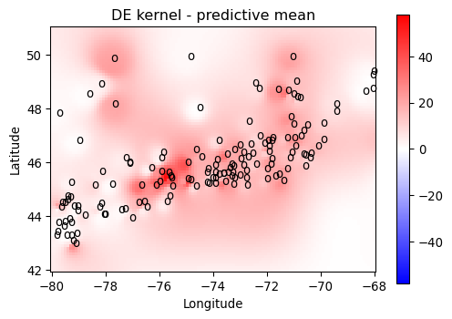
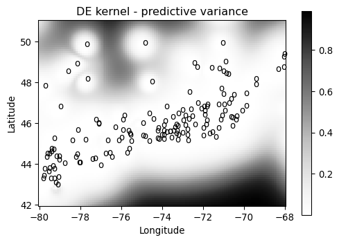
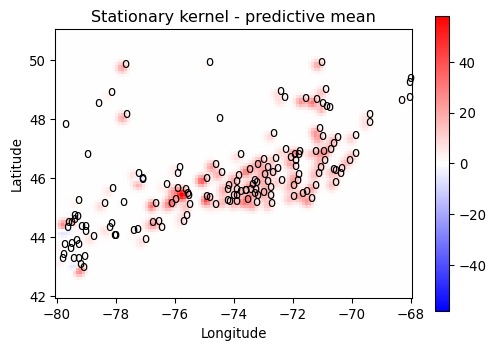
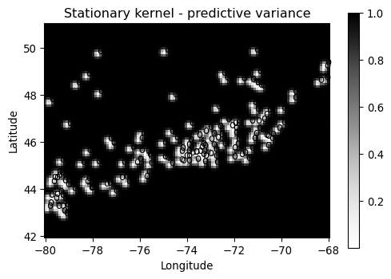
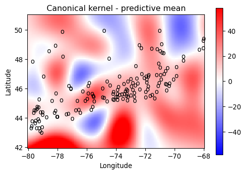
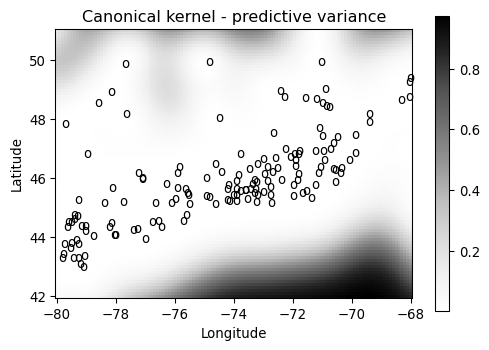

In this demo, we compare the query from a DE kernel GPR and a stationary kernel GPR. Please make sure the RWPublicJuliaRegistry custom registry is installed. You can install it by running the command using Pkgpkg"registry add General https://github.com/RoyCCWang/RWPublicJuliaRegistry"`
Setup
#Install dependencies
import Pkg
let
pkgs = ["SingleLinkagePartitions", "Distances", "DataFrames", "CSV", "Metaheuristics", "LazyGPR", "PythonPlot", "VisualizationBag", "Statistics", "SpatialGSP"]
for pkg in pkgs
if Base.find_package(pkg) === nothing
Pkg.add(pkg)
end
end
end;
#load
import Random
Random.seed!(25)
using LinearAlgebra
using Statistics
import Distances
import LazyGPR as LGP
import SingleLinkagePartitions as SL
import SpatialGSP as GSP
import Metaheuristics as EVO
import DataFrames as DF
import CSV
import VisualizationBag as VIZ
import PythonPlot as PLT
PLT.close("all")
fig_num = 1
T = Float64
D = 2;User inputs
save_results_dir = "output/"
if !ispath(save_results_dir)
mkpath(save_results_dir)
end
#optimization-related.
f_calls_limit = 1_000
ms_trait = LGP.MarginalLikelihood()
#observation model's variance.
σ² = convert(T, 1e-3);Get the training inputs, X, and outputs, y.
data_path = "data/2023_08_10_CA_stations.csv"
df = CSV.read(data_path, DF.DataFrame)
X0 = collect(
[
df.LATITUDE[n];
df.LONGITUDE[n];
]
for n in eachindex(df.LATITUDE)
)
y0 = convert(Vector{T}, df.PRCP ./ 10)
X, y = SL.avgduplicates(X0, y0, eps(T)*10);Compute warp samples that uses an axis-search graph construction, for scattered positions.
axis_config = GSP.AxisSearchConfig{T}(
kernel_σ_multiplier = convert(T, 3),
w_lb = convert(T, 0.1),
)
warp_config = GSP.WarpConfig{T}()
smooth_iters = 0
W = LGP.create_warp_samples(
LGP.UseSpatialGSP(GSP),
LGP.AxisGraph(),
X, y,
axis_config,
warp_config,
);Create warp map from the samples.
import ScatteredInterpolation
warpmap = LGP.create_warp_map(
LGP.UseScatteredInterpolation(ScatteredInterpolation),
X, W, 3,
);Create the reference (dummy) DE Kernel that uses this warpmap.
ref_dek = LGP.DEKernel(
LGP.SqExpKernel(one(T)), warpmap, zero(T),
);Hyperparameter Optimization
Settings and variable bounds.
a_lb = convert(T, 1e-3)
a_ub = convert(T, 60)
N_initials_a = 100 #the number of intial guesses for optimizing the bandwidth a.
κ_lb = zero(T)
κ_ub = maximum(abs.(W))*100 #increase this until the solution gain does is not clipped by this value.
N_initials_κ = 1_000; #the number of intial guesses for optimizing the gain κ.Put data in container.
gp_data = LGP.GPData(σ², X, y);We reset the random seed since the evolutionary optimization algorithm from Metaheuristics.jl is a random one.
Random.seed!(25)
sk_ref = ref_dek.canonical
p0s = collect( [x;] for x in LinRange(a_lb, a_ub, 100) )
sk_vars, sk_star = LGP.optimize_kernel_hp(
LGP.UseMetaheuristics(EVO),
sk_ref,
ms_trait,
gp_data,
LGP.HCostConfig(),
LGP.MetaheuristicsConfig(
f_calls_limit = f_calls_limit,
),
LGP.OptimContainer([a_lb;], [a_ub;], p0s)
);The solution, score (lower is better):
sk_vars, sk_star([30.192289102857256], 61618.821175642646)Reset the seed for the DE Kernel.
Random.seed!(25)
a0s = collect(LinRange(a_lb, a_ub, 10))
push!(a0s, sk_vars[begin])
κ0s = LinRange(0, κ_ub, 20)
p0s = collect.(
vec(collect(Iterators.product(a0s, κ0s)))
)
dek_vars, dek_star = LGP.optimize_kernel_hp(
LGP.UseMetaheuristics(EVO),
ref_dek,
ms_trait,
gp_data,
LGP.HCostConfig(),
LGP.MetaheuristicsConfig(
f_calls_limit = f_calls_limit,
),
LGP.OptimContainer([a_lb; zero(T)], [a_ub; κ_ub;], p0s)
);The solution (bandwidth, gain), score (lower is better):
dek_vars, dek_star([0.23724657135499885, 23.1197898840871], 22804.40630587782)Query
Setup query region
Near Ottawa, Ontario, Canada.
x1_lb, x1_ub = 42.0, 51.0 # latitude bounds
x2_lb, x2_ub = -80.0, -68.0 # longitude bounds
#number of query points.
Nq1 = 90
Nq2 = 120
Xqrs = ( # query grid, represented as ranges.
LinRange(x1_lb, x1_ub, Nq1),
LinRange(x2_lb, x2_ub, Nq2),
)
Xq = collect( Iterators.product(Xqrs...) ); #query positions.Stationary Kernel Model
sk = LGP.SqExpKernel(sk_vars[begin]) #assemble the kernel
gp_sk = LGP.fitGP(X, y, σ², sk) #fit GPR model
sk_Xq = collect(
LGP.queryGP(collect(x), sk, gp_sk)
for x in Iterators.product(Xqrs...)
)
mqs_sk = map(xx->xx[begin], sk_Xq) #predictive mean
vqs_sk = map(xx->xx[begin+1], sk_Xq); #predictive varianceDE kernel's canonical kernel model
ck = LGP.SqExpKernel(dek_vars[begin]) #assemble kernel
gp_ck = LGP.fitGP(X, y, σ², ck) #fit GPR
ck_Xq = collect(
LGP.queryGP(collect(x), ck, gp_ck)
for x in Iterators.product(Xqrs...)
)
mqs_ck = map(xx->xx[begin], ck_Xq) #predictive mean
vqs_ck = map(xx->xx[begin+1], ck_Xq); #predictive varianceDE kernel model
a_star, κ_star = dek_vars
dek = LGP.DEKernel( #Assemble DE kernel.
LGP.SqExpKernel(a_star),
warpmap,
κ_star,
)
gp_dek = LGP.fitGP(X, y, σ², dek); #Fit DE kernel GPR.Query the model.
dek_Xq = collect(
LGP.queryGP(collect(x), dek, gp_dek)
for x in Iterators.product(Xqrs...)
)
mqs_dek = map(xx->xx[begin], dek_Xq) #predictive mean
vqs_dek = map(xx->xx[begin+1], dek_Xq); #predictive varianceVisualize
dpi = 300
cmap = "bwr" # colormap for predictive means
var_cmap = "Greys"; # for varianceFor consistent visual comparison of the means, clamp colors to the max magnitude range of the data, and force symmetry about zero.
vmax = maximum(y)
vmin = -vmax;DE kernel model, mean:
fig_num = VIZ.plotmeshgrid2D(
PLT,
collect(Xqrs),
mqs_dek,
X,
"o",
fig_num,
"DE kernel - predictive mean";
cmap = cmap,
vmin = vmin,
vmax = vmax,
horizontal_title = "Longitude",
vertical_title = "Latitude",
matrix_mode = true,
)
PLT.gca().invert_yaxis()
PLT.gcf()
DE kernel model, variance:
fig_num = VIZ.plotmeshgrid2D(
PLT,
collect(Xqrs),
vqs_dek,
X,
"o",
fig_num,
"DE kernel - predictive variance";
cmap = var_cmap,
horizontal_title = "Longitude",
vertical_title = "Latitude",
matrix_mode = true,
)
PLT.gca().invert_yaxis()
PLT.gcf()
Stationary kernel model, mean:
fig_num = VIZ.plotmeshgrid2D(
PLT,
collect(Xqrs),
mqs_sk,
X,
"o",
fig_num,
"Stationary kernel - predictive mean";
cmap = cmap,
vmin = vmin,
vmax = vmax,
horizontal_title = "Longitude",
vertical_title = "Latitude",
matrix_mode = true,
)
PLT.gca().invert_yaxis()
PLT.gcf()
Stationary kernel model, variance:
fig_num = VIZ.plotmeshgrid2D(
PLT,
collect(Xqrs),
vqs_sk,
X,
"o",
fig_num,
"Stationary kernel - predictive variance";
cmap = var_cmap,
horizontal_title = "Longitude",
vertical_title = "Latitude",
matrix_mode = true,
)
PLT.gca().invert_yaxis()
PLT.gcf()
Canonical kernel model, mean:
fig_num = VIZ.plotmeshgrid2D(
PLT,
collect(Xqrs),
mqs_ck,
X,
"o",
fig_num,
"Canonical kernel - predictive mean";
cmap = cmap,
vmin = vmin,
vmax = vmax,
horizontal_title = "Longitude",
vertical_title = "Latitude",
matrix_mode = true,
)
PLT.gca().invert_yaxis()
PLT.gcf()
Canonical kernel model, variance:
fig_num = VIZ.plotmeshgrid2D(
PLT,
collect(Xqrs),
vqs_ck,
X,
"o",
fig_num,
"Canonical kernel - predictive variance";
cmap = var_cmap,
horizontal_title = "Longitude",
vertical_title = "Latitude",
matrix_mode = true,
)
PLT.gca().invert_yaxis()
PLT.gcf()
The caonical kernel model exhibits significant Runge's phenomenon-like oscillatory behavior. The stationary kernel model has little oscillatory behavior, but has significantly reduced smoothing radius/ability. The DE kernel actually uses the same smoothing radius/ability as the canonical kernel, but it adjusts the smoothing amount across space to reduce oscillations.
This page was generated using Literate.jl.